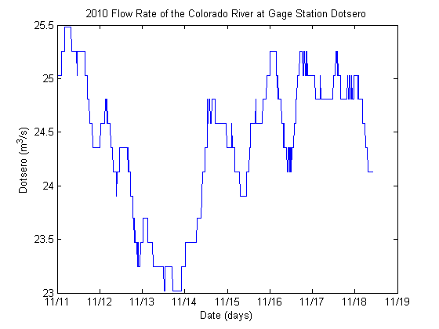
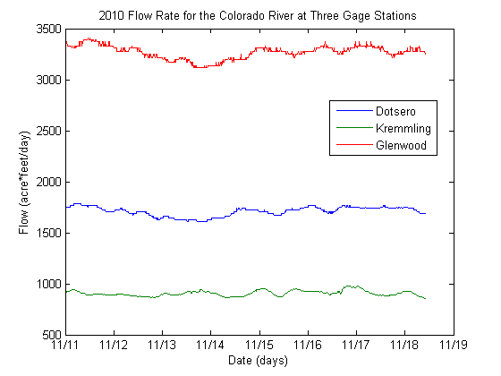

Plotting With Unit Variables
There are four plotting routines that have been adapted for plotting variables with units. These are
plot
semilogx
semilogy
loglogContents
These routines differ somewhat from the standard Matlab plotting routines. The "X" variable is a single vector with units. The "Y" variable can either be a single vector with units or a structure containing fields with units. The "X" and "Y" variables must have the same number of points. The variable names of the "X" and "Y" vectors are used to create the default labels on the axes. (These defaults can be changed with the "xlabel" and "ylabel" statements.) The units associated with the "X" and "Y" axes are displayed in parenthesis after the labels. If the "Y" variable is a structure, all members of the structure must have the same vector length and the same units. The field names in the structure are used as the names in the legend.
Reading the Data In
This example plots stream flow data from gage stations along the Colorado river. The data from three gages is first read into Matlab variables.
fid=fopen('glenwood.txt'); GlenFlow=textscan(fid,'%*s %*s %s %s %*s %*s %f','CollectOutput',true); fid=fopen('kremmling.txt'); Kremflow=textscan(fid,'%*s %*s %s %s %*s %*s %f','CollectOutput',true); fid=fopen('dotsero.txt'); Dotsflow=textscan(fid,'%*s %*s %s %s %*s %*s %f','CollectOutput',true); fclose('all');
The date and time strings appear in the data as two separate columns. These are combined into one field and converted to date strings. The date strings are then converted to date numbers.
[samples,~]=size(Dotsflow{1}); % Find the number of samples in the flow
dateTime{samples}=''; % Pre-initialize the vector for speed
% Concatinate the two cells holding date and time
for N=1:samples
dateTime{N}=[Dotsflow{1,1}{N,1} ' ' Dotsflow{1,1}{N,2}];
end
D=datenum(dateTime); % Get the date number from the strings
Constructing Unit Variables
Matlab's internal format for a date is the date number. It is kept as the number of days from Jan-1-0000 00:00:00. The vector "Date" is created with units of days.
Date=convert(unit(D,'day'),'days');
It is important that the date numbers are converted to units before plotting. Matlab objects look at the left most parameter in the function to determine which method is called. If the "X" vector is not an object of class "unit", the wrong plotting method will be called. Since the built-in plotting function does not understand the class "unit", it will report an error about the "Y" variable.
The flow data for the gage station at Dotsero is extracted from the appropriate column of "DotsFlow" and given units.
Dotsero=unit(Dotsflow{1,2}(1:samples),'ft^3/sec');
Plotting the Data for Dotsero
The data is plotted, the ticks on the x-axis changed to month/day, and a title placed on the graph.
plot(Date,Dotsero) datetick('x','mm/dd') title('2010 Flow Rate of the Colorado River at Gage Station Dotsero')
Plotting Multiple Data Sets
Multiple data sets can be plotted on a graph with a structure containing the "Y" vectors. First, the data is assembled from the original data and then converted to acre-feet per day.
Flow.Dotsero=convert(Dotsero,'acre*feet/day'); Flow.Kremmling=unit(Kremflow{1,2}(1:samples),'ft^3/sec'); Flow.Kremmling=convert(Flow.Kremmling,'acre*feet/day'); Flow.Glenwood=unit(GlenFlow{1,2}(1:samples),'ft^3/sec'); Flow.Glenwood=convert(Flow.Glenwood,'acre*feet/day');
The data is plotted with the same date/time vector. Here we capture the legend handle so that the legend position can be determined from the first run using a "get" statement. When the position is known it is saved and used to place the legend programmatically.
[~,legendHandle]=plot(Date,Flow); datetick('x','mm/dd') title('2010 Flow Rate for the Colorado River at Three Gage Stations') set(legendHandle,'Position',[0.6568 0.5885 0.2143 0.1444]);
While this example used the plot statement, the semilogx, semilogy, and loglog statements work in an analogous manner.